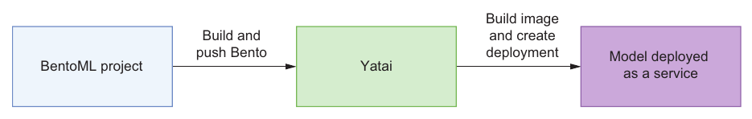
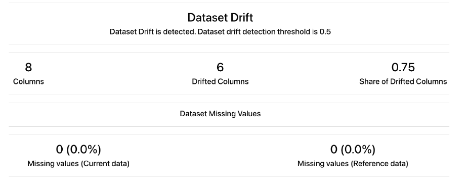

فصل ۶ · صص. ۱۴۹–۱۸۰
بردن مدلهای ML به production
Productionizing ML models
Machine Learning Platform Engineering, 1st Edition
پس از ارکستراسیون، دو چالش میماند: مدل را چطور قابلاطمینان serve کنیم، و چطور بفهمیم با گذشت زمان هنوز خوب کار میکند (ص. ۱۴۹). این فصل حرف E روی نقشهی ذهنی است، یعنی مدل بهصورت API (ص. ۱۵۰). BentoML مدل را از MLflow برمیدارد، با یک service و runner و یک bentofile.yaml در قالبی به نام Bento بستهبندی میکند، و Yatai آن را بیDockerfile و بیmanifest روی Kubernetes deploy میکند، با endpoint /metrics آماده (صص. ۱۵۱–۱۶۴). بخش دوم data drift است: انواع drift، آزمونهای آماری، و Evidently با report و dashboard؛ یک component تشخیص drift در pipeline batch فصل ۵ و یک پنجرهی microbatch در سرویس بلادرنگ (صص. ۱۶۴–۱۸۰).
فهرست خود فصل (از فهرست مطالب کتاب)
- ۶.۱ ابزار BentoML بهعنوان پلتفرم deploy — ص. ۱۵۱
- ۶.۱.۱ ساختن Bento — ص. ۱۵۲
- ۶.۱.۲ ساختن و push کردن Bento — ص. ۱۵۶
- ۶.۱.۳ deploy کردن Bento — ص. ۱۵۸
- ۶.۲ ابزار Evidently برای مانیتورینگ data drift — ص. ۱۶۴
- ۶.۲.۱ report و dashboard تشخیص data drift — ص. ۱۶۵
- ۶.۲.۲ component تشخیص data drift در pipeline Kubeflow — ص. ۱۷۱
- ۶.۲.۳ تشخیص data drift برای مدلی که API است — ص. ۱۷۵
از کتاب
مقدمه
این تکنیکها هم برای مدلهای سنتی و هم برای LLM کار میکنند؛ جزئیات مخصوص LLM، مثل prompt و observability و ارزیابی، در فصلهای ۱۲ و ۱۳ میآید (ص. ۱۵۱). کد فصل در github.com/practical-mlops/chapter-6 است (ص. ۱۵۱).
از کتاب
۶.۱ ابزار BentoML بهعنوان پلتفرم deploy
فصل ۵ مدل را batch اجرا کرد؛ اینجا همان classifier درآمد به یک endpoint API تبدیل میشود (ص. ۱۵۱).


۶.۱ ابزار BentoML بهعنوان پلتفرم deploy
۶.۱.۱ ساختن Bento
صص. ۱۵۲–۱۵۶| گام | چه میشود |
|---|---|
| ۱. ثبت مدل | bentoml.mlflow.import_model مدل را با نام و stage از MLflow به store محلی BentoML میآورد (ص. ۱۵۲) |
| ۲. service و runner | runner مدل را اجرا میکند؛ service با @svc.on_startup فهرست ستونها را از MLflow و feature store را با مشخصات MinIO آماده و در context.state نگه میدارد (صص. ۱۵۳–۱۵۴) |
| ۳. API | ورودی user_id بهصورت JSON؛ featureها با get_online_features، نگاشت به ستونهای dummy، پیشبینی، و خروجی income_category (ص. ۱۵۵) |
۴. bentofile.yaml | service، label مالک، فایلها، requirements و متغیرهای محیطی مثل ENV_NAME (ص. ۱۵۶) |
چند runner در یک service برای وقتی است که چند مدل پشت یک API باشند، مثلاً برای مقایسهی مدلها (ص. ۱۵۳).
۶.۱ ابزار BentoML بهعنوان پلتفرم deploy
۶.۱.۲ ساختن و push کردن Bento
صص. ۱۵۶–۱۵۸فرمان bentoml build Bento را با tag میسازد؛ bentoml containerize از آن image میسازد تا محلی با docker run آزموده شود؛ بعد با token به Yatai وارد میشوید و bentoml push هم مدل و هم Bento را به store دوردست میفرستد (صص. ۱۵۶–۱۵۸).
۶.۱ ابزار BentoML بهعنوان پلتفرم deploy
۶.۱.۳ deploy کردن Bento
صص. ۱۵۸–۱۶۴- در UI Yatai، deployment با نام Bento و نسخهی آن ساخته میشود؛ replica و CPU و حافظه برای API Server و runnerها جدا تنظیم میشود (صص. ۱۵۸–۱۶۱).
- سرویس Yatai با یک Job Kubernetes به نام
yatai-bento-image-builder-...image میسازد و سپس podها بالا میآیند؛ در مثال کتاب یک pod API Server و دو pod Runner (ص. ۱۶۱). - یک ingress ساخته میشود و صفحهی Swagger برای آزمودن
/predictدر دسترس است (ص. ۱۶۲). - نشانی endpoint
/metricsمتریکهای استاندارد مثل درخواست در ثانیه و latency را برای scrape با Prometheus میدهد (صص. ۱۶۲–۱۶۴).
| راه دستی فصل ۳ | راه BentoML |
|---|---|
| Dockerfile | bentofile.yaml |
| manifestهای Kubernetes و Helm | deployment در UI Yatai |
کد /metrics با exporter | /metrics آماده |
| یک Deployment برای همه | API Server و Runner جدا scale میشوند |
مقایسهی vault بر پایهی pp. 151 و 161–164.
در stack مرجع، API پیشبینی یک image معمولی است که با GitLab CI ساخته و با Argo CD deploy میشود.
?نوبت شما · API دستهبندی متن تراکنش زیر بار کند شده. پروفایل نشان میدهد بیشتر زمان در inference مدل است و parsing درخواست سبک است. در طراحی API Server و Runner کتاب، کدام را scale میکنید و چرا این جدایی کمک میکند؟دیدن پاسخ
Runner را؛ کتاب API Server را frontend و Runner را جایی میداند که مدل نگه داشته و inference میشود، و این دو جدا scale میشوند (ص. ۱۶۱). در یک Deployment یکپارچه، برای بیشتر کردن ظرفیت inference باید کل برنامه را تکثیر کرد، از جمله بخش سبک.
از کتاب
۶.۲ ابزار Evidently برای مانیتورینگ data drift
مدلی که اول خوب بود، چند ماه بعد افت میکند چون featureها از چیزی که در آموزش دیده بود فاصله گرفتهاند (ص. ۱۶۴). فرض آموزش این است که رابطهی ورودی و خروجی و توزیع ورودی ثابت میماند؛ در دنیای واقعی این فرض با گذشت زمان نمیماند (ص. ۱۶۴).
| نوع drift | چه چیزی عوض میشود | مثال کتاب |
|---|---|---|
| label drift | معنای target | تعریف «معیوب» در خط تولید (ص. ۱۶۴) |
| prior probability shift | سهم کلاسها | نسبت موارد مثبت و منفی در تشخیص fraud (ص. ۱۶۴) |
| covariate shift | توزیع featureهای ورودی | جمعیتشناسی یا رفتار مشتری (صص. ۱۶۴–۱۶۵) |
| sudden drift | تغییر ناگهانی | رفتار مشتری در یک pandemic (ص. ۱۶۵) |
۶.۲ ابزار Evidently برای مانیتورینگ data drift
۶.۲.۱ report و dashboard تشخیص data drift
صص. ۱۶۵–۱۷۱| آزمون | برای | تفسیر |
|---|---|---|
| Kolmogorov–Smirnov | feature عددی؛ مقایسهی CDFها | p-value زیر آستانه، مثلاً ۰٫۰۵، یعنی drift |
| chi-square | feature categorical | تغییر توزیع دستهها |
| Wasserstein، یا Earth Mover's distance | فاصلهی دو توزیع | از صفر تا بینهایت؛ بزرگتر یعنی drift بیشتر |
بر پایهی pp. 165 و 167.
ابزار Evidently خودش آزمون مناسب داده را انتخاب میکند، ولی میشود آزمون را صریح تعیین کرد یا آزمون خود را نوشت (ص. ۱۶۵). مفهومها (صص. ۱۶۵–۱۶۷):
- هر report از چند metric ساخته میشود، در سطح dataset یا ستون؛ مثلاً
DatasetMissingValuesMetric. - هر metric preset قالب آماده است:
DataDriftPresetوDataQualityPresetوRegressionPreset. - برای Wasserstein، امتیاز بالای ۰٫۱ یعنی drift detected (ص. ۱۶۷).


هر report یک snapshot است؛ برای دیدن روند در زمان، Evidently UI با workspace و project و panel ساخته میشود: DashboardPanelCounter برای یک عدد، مثل سهم ستونهای drifted با CounterAgg.LAST، و DashboardPanelPlot برای نمودار؛ بدون project.save() تغییر در UI دیده نمیشود (صص. ۱۶۷–۱۷۱).
۶.۲ ابزار Evidently برای مانیتورینگ data drift
۶.۲.۲ component تشخیص data drift در pipeline Kubeflow
صص. ۱۷۱–۱۷۵flowchart LR
A["read data"] --> B["retrieve features"]
B --> D{"detect drift<br/>مرجع از run مدل در MLflow<br/>report به Evidently"}
D -->|"بدون drift"| C["run inference"]
D -->|"drift"| X([توقف pipeline])
C --> W["write data"]نمودار vault از p. 171.
دادهی مرجع همان dataset ثبتشده در run مدل در MLflow است (فصل ۴)، که از MinIO دانلود میشود؛ دادهی فعلی خروجی Feast است؛ metricهای report باید با panelهای dashboard یکی باشند (ص. ۱۷۱). در اجرای کتاب هیچ ستونی drift معنادار ندارد و dashboard پس از هر run بهروز میشود (صص. ۱۷۳–۱۷۴).
۶.۲ ابزار Evidently برای مانیتورینگ data drift
۶.۲.۳ تشخیص data drift برای مدلی که API است
صص. ۱۷۵–۱۸۰برای fraud یا recommendation، drift بلادرنگ لازم است؛ ولی مقایسهی دادهی مرجع با یک درخواست دقیق نیست، پس با یک microbatch مقایسه میکنیم (ص. ۱۷۵). MonitoringService پنجرهی لغزان میسازد: تا پر شدن پنجره، ردیف اضافه میکند؛ از آن به بعد، با هر درخواست report میسازد و قدیمیترین ردیف را بیرون میاندازد (صص. ۱۷۵–۱۷۶).
با پنجرهی ۵۰، سهم ستونهای drifted حدود ۰٫۸۷۵ است، با اینکه دادهی فعلی از خود دادهی آموزش آمده؛ کتاب آن را به اندازهی کوچک نمونه نسبت میدهد و پیشنهاد میکند آستانهها بازبینی و پنجرههای بزرگتر آزموده شوند (ص. ۱۷۸).
اجرا کنید: اندازهی پنجره و هشدار drift کاذب — نمونههایی از همان توزیع مرجع میکشد و نشان میدهد با پنجرهی کوچک، آزمونها چند بار drift اعلام میکنند.
پس از تشخیص drift (ص. ۱۷۹):
- اول drift را بررسی کنید: نوع و شدت، و اینکه روی دقت یا انصاف اثر دارد یا نه.
- سپس pipelineهای بالادست و پیشپردازش را درست کنید اگر منشأ آنجاست.
- مدل را با دادهی تازه retrain کنید اگر اثر جدی است.
- انتخاب featureها را بازبینی کنید.
در stack مرجع، Silver دادهی مرجع آموزش و دادهی روزانه هر دو را دارد، و هشدارها از Grafana میآیند.
?نوبت شما · هشدار drift مدل دستهبندی تراکنشها برای ستون «مبلغ» فعال شده، درست روزی که loader منبع B تغییر واحد پول از ریال به تومان را بارگذاری کرده. از چهار گام کتاب، کدام اول است و کدام اشتباه است؟دیدن پاسخ
اول بررسی، و بعد درست کردن pipeline بالادست یا پیشپردازش، چون منشأ تغییر در داده است نه در رفتار مشتری (ص. ۱۷۹). retrain روی دادهای که واحدش عوض شده مشکل را در مدل پنهان میکند؛ اول داده را یکدست کنید.
مرور
بدهبستانها در یک نگاه
| انتخاب | چه میدهد | چه میگیرد |
|---|---|---|
| deploy دستی با Docker و Helm | کنترل کامل | زمان و مهارت زیرساخت (ص. ۱۵۱) |
| BentoML و Yatai | بیDockerfile و manifest، /metrics آماده | وابستگی به یک چارچوب و قالب Bento (صص. ۱۵۱، ۱۶۴) |
| batch در KFP | پیشبینی برای همه، drift روی کل batch | تأخیر تا اجرای بعدی (صص. ۱۴۵، ۱۷۱) |
| API بلادرنگ | پاسخ فوری | drift فقط روی microbatch معنا دارد (ص. ۱۷۵) |
| پنجرهی کوچک drift | واکنش سریع | هشدار کاذب، مثل ۰٫۸۷۵ روی دادهی آموزش (ص. ۱۷۸) |
| پنجرهی بزرگ drift | امتیاز پایدارتر | دیرتر متوجه تغییر میشوید (ص. ۱۷۸) |
| توقف pipeline روی drift | پیشبینی بد منتشر نمیشود | پیشبینی آن روز هم منتشر نمیشود (ص. ۱۷۱) |
مرور
نکتههای کلیدی
- راه دستی فصل ۳ زمانبر است و همهی data scientistها مهارتش را ندارند: image، چند manifest، کد مانیتورینگ و CI/CD (ص. ۱۵۱).
- هر Bento یک بایگانی یکپارچه برای برنامهی ML است، مثل جعبهی غذای ژاپنی؛ Yatai همان را deploy و scale و مانیتور میکند (ص. ۱۵۱).
- بخش service منطق serving را تعریف میکند و runner محاسبه را؛ runnerها در workerهای جدا اجرا و مستقل scale میشوند (ص. ۱۵۳).
- در deploy دو نوع pod هست: API Server که درخواست را میگیرد و Runner که مدل را نگه میدارد و inference میکند؛ هر کدام جدا scale میشود (ص. ۱۶۱).
- پدیدهی data drift یعنی افت کارایی مدل چون آمار دادهی ورودی عوض شده؛ کتاب label drift، prior probability shift، covariate shift و sudden drift را جدا میکند (صص. ۱۶۴–۱۶۵).
- هر آزمون drift یک امتیاز دارد؛ برای Wasserstein آستانهی پیشفرض Evidently ۰٫۱ است (ص. ۱۶۷).
- در pipeline batch، component drift پیش از inference مینشیند و اگر drift دید، pipeline را متوقف میکند (ص. ۱۷۱).
- برای API، drift را روی یک درخواست نسنجید؛ روی یک پنجرهی microbatch بسنجید. با پنجرهی ۵۰ تایی، کتاب ۸۷٪ ستونها را drifted میبیند در حالی که داده از همان مجموعهی آموزش آمده است (صص. ۱۷۵–۱۷۸).
تمرین
خودتان را بسنجید
پرسشها و پاسخها مال vault است و از روی یادداشتهای بالا نوشته شده؛ پاسخها به صفحههای کتاب ارجاع میدهند.
۱مفهوم runner در BentoML چیست و چرا از service جداست؟دیدن پاسخ
واحد محاسبهای که روی worker Python جدا اجرا و مستقل scale میشود؛ service منطق serving را دارد و فراخوانیها را بین workerهای runner پخش میکند (ص. ۱۵۳).
۳خود component تشخیص drift در pipeline batch کجا مینشیند و اگر drift ببیند چه میکند؟دیدن پاسخ
بین بازیابی feature و inference؛ اگر drift بین دادهی تازه و دادهی مرجع آموزش ببیند، اجرای pipeline را متوقف میکند (ص. ۱۷۱).
۴چرا کتاب drift را روی هر درخواست API نمیسنجد؟دیدن پاسخ
چون مقایسهی دادهی مرجع با یک نمونه دقیق نیست؛ یک پنجرهی لغزان microbatch نگه میدارد و report را روی آن میسازد (ص. ۱۷۵).
مکمل
فراتر از کتاب
مکمل vault، نه از متن کتاب.
- ساختار API بخش
bentoml.Serviceو runner در BentoML 1.2 به بعد با@bentoml.serviceو کلاسهای Python جایگزین شده و Yatai دیگر فعالانه نگهداری نمیشود؛ ایدهی جدا کردن frontend سبک از worker سنگین inference در هر ابزار serving دیگری، مثل KServe که فصل ۱۰ اشاره میکند، باقی است. - شاخص Population Stability Index که در اعتبارسنجی مدلهای اعتباری رایج است، همان مقایسهی bucketهای توزیع مرجع و فعلی است؛ همان آستانهی ۰٫۱ و ۰٫۲۵ هم روی اندازهی نمونه حساس است.
قدمهای بعدی
ادامه بدهید
اجرا کنید
اندازهی پنجره و هشدار drift کاذب
چرا سرویسی که دادهاش از خود مجموعهی آموزش آمده، با پنجرهی ۵۰ تایی میگوید بیشتر ستونها drift دارند؟ این آزمایش یک مجموعهی مرجع با ۲۰۰۰ ردیف و هشت ستون عددی میسازد و بعد پنجرههایی با اندازههای ۱۰ تا ۱۰۰۰ از همان توزیعها میکشد، پس هر drift اعلامشده هشدار کاذب است. برای هر ستون فاصلهی Wasserstein را حساب میکند و با آستانهی ۰٫۱ میسنجد. در بخش دوم یک ستون را واقعاً به اندازهی ربع انحراف معیار جابهجا میکند تا ببینید کدام پنجره drift واقعی را از نویز جدا میکند.
cd books/machine-learning-platform-engineering/lab/06-drift-window-size
python3 drift_window.pyپیوندها
- فصلهای مرتبط: فصل ۳: ساختن برنامه روی Kubernetes که راه دستی deploy و
/metricsرا نشان داد، فصل ۵: ارکستراسیون pipelineهای ML که pipeline batch را ساخت، فصل ۱۰: inference و serving مدل که BentoML را عمیقتر میکند، و فصل ۱۱: مانیتورینگ و explainability که drift را برای تصویر و recommender ادامه میدهد. - اجرا کنید: اندازهی پنجره و هشدار drift کاذب